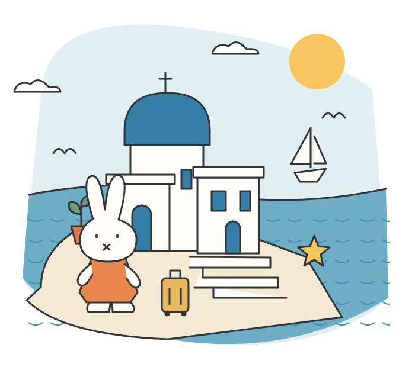

雅典 → 德爾菲 → 梅特歐拉 → 雅典
三人可分攤租車；分日駕駛時間暫抓 3／4／5 小時含短休息。無人駕車則改訂三至四日團，確認住宿與行李政策。
2027. 09. 24 — 10. 12
跟著兔兔，從古老的雅典走進天空之城，
再搭一艘船，去收集小島上的陽光。

a little sunshine, a lot of blue.GREECETHE WAY WE WANDER
少搬幾次行李，多留一點發呆的時間。
兩座小島，剛剛好的旅行節奏。
ATHENS · 3 晚
DELPHI · 1 晚
METEORA · 2 晚
NAXOS · 4 晚
SANTORINI · 4 晚
途中小歇：9/30 雅典 1 晚；回程緩衝：10/9–10/12 雅典 3 晚。共 18 晚，10/12 離境。
ONE LOVELY DAY AT A TIME
GETTING FROM HERE TO THERE
本島選擇租車或有接送的多日團；
跳島搭船，回雅典優先搭飛機。
三人可分攤租車；分日駕駛時間暫抓 3／4／5 小時含短休息。無人駕車則改訂三至四日團，確認住宿與行李政策。
第一段抓半天移動，第二段抓 2–4 小時船程作規劃緩衝，實際依船型、停靠港與 2027 班表調整；抵達日不訂不可退活動。
優先查直飛國內線，保留三晚雅典緩衝再接國際航班。若取消則優先改機位，必要時改船，不安排當日銜接長程機。
OUR LITTLE TRAVEL FUND
台北出發 · 經濟艙來回 · 18 晚
三人同行，三人房／家庭房共住
預設匯率僅供換算，不是即期匯率。人數變更後請重新確認房型；試算維持同一房間總價。
BEFORE OUR LITTLE ADVENTURE
勾勾會存在這台裝置。
剩下的，就交給出發那天的好心情。
NOTES & USEFUL LINKS
資料查閱：2026/11/26。景點依官方旅遊資料選取；天數、路線與費用為本手帳的建議規劃。出發前重新核對交通、古蹟營業、修道院休息日及入境規定。